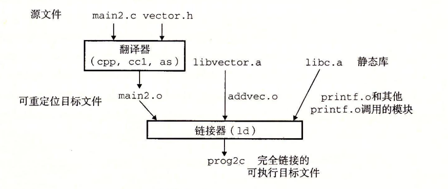

7.6 符号解析
链接器解析符号引用的方法是将每个引用与它输入的可重定位目标文件的符号表中的一个确定的符号定义关联起来。对那些和引用定义在相同模块中的局部符号的引用，符号解析是非常简单明了的。编译器只允许每个模块中每个局部符号有一个定义。静态局部变量也会有本地链接器符号，编译器还要确保它们拥有唯一的名字。
不过，对全局符号的引用解析就棘手得多。当编译器遇到一个不是在当前模块中定义的符号（变量或函数名）时，会假设该符号是在其他某个模块中定义的，生成一个链接器符号表条目，并把它交给链接器处理。如果链接器在它的任何输入模块中都找不到这个被引用符号的定义，就输出一条（通常很难阅读的）错误信息并终止。比如，如果我们试着在一台 Linux 机器上编译和链接下面的源文件：
void foo(void);
int main() {
foo();
return 0;
}
那么编译器会没有障碍地运行，但是当链接器无法解析对 foo 的引用时，就会终止：
linux> gcc -Wall -Og -o linkerror linkerror.c
/tmp/ccSz5uti.o: In function 'main':
/tmp/ccSzSuti.o(.text+0x7): undefined reference to 'foo'
对全局符号的符号解析很棘手，还因为多个目标文件可能会定义相同名字的全局符号。在这种情况中，链接器必须要么标志一个错误，要么以某种方法选出一个定义并抛弃其他定义。Linux 系统采纳的方法涉及编译器、汇编器和链接器之间的协作，这样也可能给不警觉的程序员带来一些麻烦。
旁注 - 对 C++ 和 Java 中链接器符号的重整
C++ 和 Java 都允许重载方法，这些方法在源代码中有相同的名字，却有不同的参数列表。那么链接器是如何区别这些不同的重载函数之间的差异呢？C++ 和 Java 中能使用重载函数，是因为编译器将每个唯一的方法和参数列表组合编码成一个对链接器来说唯一的名字。这种编码过程叫做重整（mangling），而相反的过程叫做恢复（demangling）。
幸运的是，C++ 和 Java 使用兼容的重整策略。一个被重整的类名字是由名字中字符的整数数量，后面跟原始名字组成的。比如，类 Foo 被编码成 3Foo。方法被编码为原始方法名，后面加上 __，加上被重整的类名，再加上每个参数的单字母编码。比如，Foo::bar(int，long) 被编码为 bar__3Fooil。重整全局变量和模板名字的策略是相似的。
7.6.1 链接器如何解析多重定义的全局符号
链接器的输入是一组可重定位目标模块。每个模块定义一组符号，有些是局部的（只对定义该符号的模块可见），有些是全局的（对其他模块也可见）。如果多个模块定义同名的全局符号，会发生什么呢？下面是 Linux 编译系统采用的方法。
在编译时，编译器向汇编器输岀每个全局符号，或者是强（strong）或者是弱（weak），而汇编器把这个信息隐含地编码在可重定位目标文件的符号表里。函数和已初始化的全局变量是强符号，未初始化的全局变量是弱符号。
根据强弱符号的定义，Linux 链接器使用下面的规则来处理多重定义的符号名：
- 规则 1：不允许有多个同名的强符号。
- 规则 2：如果有一个强符号和多个弱符号同名，那么选择强符号。
- 规则 3：如果有多个弱符号同名，那么从这些弱符号中任意选择一个。
比如，假设我们试图编译和链接下面两个 C 模块：
/* foo1.c */
int main()
{
return 0;
}
/* bar1.c */
int main()
{
return 0;
}
在这个情况中，链接器将生成一条错误信息，因为强符号 main 被定义了多次（规则 1）：
linux> gcc foo1.c bar1.c
/tmp/ccq2Uxnd.o: In function 'main':
bar1.c:(.text+0x9): multiple definition of 'main'
相似地，链接器对于下面的模块也会生成一条错误信息，因为强符号 x 被定义了两次（规则 1）：
/* foo2.c */
int x = 15213;
int main()
{
return 0;
}
/* bar2.c */
int x = 15213;
void f()
{
}
然而，如果在一个模块里 x 未被初始化，那么链接器将安静地选择在另一个模块中定义的强符号（规则 2）：
/* foo3.c */
#include <stdio.h>
void f(void);
int x = 15213;
int main()
{
f();
printf("x = %d\n", x)
return 0;
}
/* bar3.c */
int x;
void f()
{
x = 15212;
}
在运行时，函数 f 将 x 的值由 15213 改为 15212，这会给 main 函数的作者带来不受欢迎的意外！注意，链接器通常不会表明它检测到多个 x 的定义：
linux> gcc -o foobar3 foo3.c bar3.c
linux> ./foobar3
x = 15212
如果 x 有两个弱定义，也会发生相同的事情（规则 3）：
/* foo4.c */
#include <stdio.h>
void f(void);
int x;
int main()
{
x = 15213;
f();
printf("x = %d\n", x);
return 0;
}
/* bar4.c */
int x;
void f()
{
x = 15212;
}
规则 2 和规则 3 的应用会造成一些不易察觉的运行时错误，对于不警觉的程序员来说，是很难理解的，尤其是如果重复的符号定义还有不同的类型时。考虑下面这个例子，其中 x 不幸地在一个模块中定义为 int，而在另一个模块中定义为 double：
/* foo5.c */
#include <stdio.h>
void f(void);
int y = 15212;
int x = 15213;
int main()
{
f();
printf("x = 0x%x y = 0x%x \n",
x, y);
return 0;
}
/* bar5.c */
double x;
void f()
{
x = -0.0;
}
在一台 x86-64/Linux 机器上，double 类型是 8 个字节，而 int 类型是 4 个字节。在我们的系统中，x 的地址是 0x601020，y 的地址是 0x601024。因此，bar5.c 的第 6 行中的赋值 x=-0.0 将用负零的双精度浮点表示覆盖内存中 x 和 y 的位置（foo5.c 中的第 5 行和第 6 行）！
linux> gcc -Wall -Og -o foobar5 foo5. c bar5 .c
/usr/bin/ld: Warning: alignment 4 of symbol 'x' in /tmp/cclUFK5g.o
is smaller than 8 in /tmp/ccbTLcb9.o
linux> ./foobar5
x = 0x0 y = 0x80000000
这是一个细微而令人讨厌的错误，尤其是因为它只会触发链接器发出一条警告，而且通常要在程序执行很久以后才表现出来，且远离错误发生地。在一个拥有成百上千个模块的大型系统中，这种类型的错误相当难以修正，尤其因为许多程序员根本不知道链接器是如何工作的。当你怀疑有此类错误时，用像 GCC-fno-common 标志这样的选项调用链接器，这个选项会告诉链接器，在遇到多重定义的全局符号时，触发一个错误。或者使用 -Werror 选项，它会把所有的警告都变为错误。
在 7.5 节中，我们看到了编译器如何按照一个看似绝对的规则来把符号分配为 COMMON 和 .bss。实际上，采用这个惯例是由于在某些情况中链接器允许多个模块定义向名能全局符号。当编译器在翻译某个模块时，遇到一个弱全局符号，比如说 x，它并不知道其他模块是否也定义了 x，如果是，它无法预测链接器该使用 x 的多重定义中的哪一个。所以编祥器把 x 分配成 COMMON，把决定权留给链接器。另一方面，如果 x 初始化为 0，那么它是一个强符号（因此根据规则 2 必须是唯一的），所以编译器可以很自信地将它分配成 .bss。类似地，静态符号的构造就必须是唯一的，所以编译器可以自信地把它们分配成 .data 或 .bss。
练习题 7.2
在此题中，REF(x.i) → DEF(x.k) 表示链接器将把模块 i 中对符号 x 的任意引用与模块 k 中 x 的定义关联起来。对于下面的每个示例，用这种表示法来说明链接器将如何解析每个模块中对多重定义符号的引用。如果有一个链接时错误（规则 1），写“错误”。如果链接器从定义中任意选择一个（规则 3），则写“未知”。
A.
(a) REF(main.1) → DEF(____.__)
(b) REF(main.2) → DEF(____.__)
/* Module 1 */
int main()
{
}
/* Module 2 */
int main;
int p2()
{
}
B.
(a) REF(main.1) → DEF(____.__)
(b) REF(main.2) → DEF(____.__)
/* Module 1 */
int main()
{
}
/* Module 2 */
int main = 1;
int p2()
{
}
C.
(a) REF(x.1) → DEF(____.__)
(b) REF(x.2) → DEF(____.__)
/* Module 1 */
int x;
void main()
{
}
/* Module 2 */
double x = 1.0;
int p2()
{
}
这是一个简单的练习，检査你对 Unix 链接器解析在一个以上模块中有定义的全局符号时所使用规则的理解。理解这些规则可以帮助你避免一些讨厌的编程错误。
A. 链接器选择定义在模块 1 中的强符号，而不是定义在模块 2 中的弱符号（规则 2）：
（a）REF(main.1) → DEF（main.1）
（b）REF(main.2) → DEF（main.1）
B. 这是一个错误，因为每个模块都定义了一个强符号 main（规则 1）。
C. 链接器选择定义在模块 2 中的强符号，而不是定义在模块 1 中的弱符号（规则 2）：
（a）REF(x.1) → DEF（x.2）
（b）REF(x.2) → DEF（x.2）
7.6.2 与静态链接库
迄今为止，我们都是假设链接器读取一组可重定位目标文件，并把它们链接起来，形成一个输出的可执行文件。实际上，所有的编译系统都提供一种机制，将所有相关的目标模块打包成为一个单独的文件，称为静态库（staticlibrary），它可以用做链接器的输入。当链接器构造一个输出的可执行文件时，它只复制静态库里被应用程序引用的目标模块。
为什么系统要支持库的概念呢？以 ISO C99 为例，它定义了一组广泛的标准 I/O、字符串操作和整数数学函数，例如 atoi、printf，scanf、strcpy 和 rand。它们在 libc.a 库中，对每个 C 程序来说都是可用的。ISO C99 还在 libm.a 库中定义了一组广泛的浮点数学函数，例如 sin、cos 和 sqrt。
让我们来看看如果不使用静态库，编译器开发人员会使用什么方法来向用户提供这些函数。一种方法是让编译器辨认出对标准函数的调用，并直接生成相应的代码。Pascal（只提供了一小部分标准函数）釆用的就是这种方法，但是这种方法对 C 而言是不合适的，因为 C 标准定义了大量的标准函数。这种方法将给编译器增加显著的复杂性，而且每次添加、删除或修改一个标准函数时，就需要一个新的编译器版本。然而，对于应用程序员而言，这种方法会是非常方便的，因为标准函数将总是可用的。
另一种方法是将所有的标准 C 函数都放在一个单独的可重定位目标模块中（比如说 libc.o 中）应用程序员可以把这个模块链接到他们的可执行文件中：
linux> gcc main.c /usr/lib/libc.o
这种方法的优点是它将编译器的实现与标准函数的实现分离开来，并且仍然对程序员保持适度的便利。然而，一个很大的缺点是系统中每个可执行文件现在都包含着亠份标准：函数. 集合的完全副本，这对磁盘空间是很大的浪费。（在一个典型的系统上，libc.a 大约是 5MB，而 libm.a 大约是 2MB。）更糟的是，每个正在运行的程序都将它自己的这些函数的副本放在内存中，这是对内存的极度浪费。另一个大的缺点是，对任何标准函数的任何改变，无论多么小的改变，都要求库的开发人员重新编译整个源文件，这是一个非常耗时的操作，使得标准函数的开发和维护变得很复杂。
我们可以通过为每个标准函数创建一个独立的可車定位文件，把它们存放在一个为大家都知道的目录中来解决其中的一些问题。然而，这种方法要求应用程序员显式地链接合适的目标模块到它们的可执行文件中，这是一个容易出错而旦耗时的过程：
linux> gcc main.c /usr/lib/printf.o /usr/lib/scanf.o ...
静态库概念被提出来，以解决这些不同方法的缺点。相关的函数可以被编译为独立的目标模块，然后封装成一个单独的静态库文件。然后，应用程序可以通过在命令行上指定单独的文件名字来使用这些在库中定义的函数。比如，使用 C 标准库和数学库中函数的程序可以用形式如下的命令行来编译和链接：
linux> gcc main.c /usr/lib/libm.a /usr/lib/libc.a
在链接时，链接器将只复制被程序引用的目标模块，这就减少了可执行文件在磁盘和内存中的大小。另一方面，应用程序员只需要包含较少的库文件的名字（实际上，C 编译器驱动程序总是传送 libc.a 给链接器，所以前面提到的对 libc.a 的引用是不必要的）。
在 Linux 系统中，静态库以一种称为存档（archive）的特殊文件格式存放在磁盘中。存档文件是一组连接起来的可重定位目标文件的集合，有一个头部用来描述每个成员目标文件的大小和位置。存档文件名由后缀 .a 标识。
为了使我们对库的讨论更加形象具体，考虑图 7-6 中的两个向量例程。每个例程，定义在它自己的目标模块中，对两个输入向量进行一个向量操作，并把结果存放在一个输出向量中。每个例程有一个副作用，会记录它自己被调用的次数，每次被调用会把一个全局变量加 1。（当我们在 7.12 节中解释位置无关代码的思想时会起作用。）
int addcnt = 0;
void addvec(int *x, int *y,
int *z, int n)
{
int i;
addcnt++;
for ( i = 0; i < n; i++)
z[i] = x[i] + y[i];
}
int multcnt = 0;
void multvec(int *x，int *y,
int *z，int n)
{
int i;
multcnt++;
for (i = 0; i < n; i++)
z[i] = x[i] * y[i];
}
图 7-6 libvector 库中的成员目标文件
要创建这些函数的一个静态库，我们将使用 AR 工具，如下：
linux> gcc -c addvec.c multvec.c
linux> ar rcs libvector.a addvec.o multvec.o
为了使用这个库，我们可以编写一个应用， 比如图 7-7 中的 main2.c，它调用 addvec 库例程。包含（或头）文件 vector .h 定义了 libvector.a 中例程的函数原型。
#include <stdio.h>
#include "vector.h"
int x[2] = {1, 2};
int y[2] = {3, 4};
int z[2];
int main()
{
addvec(x, y, z, 2);
printf("z = [%d %d]\n", z[0], z[1]);
return 0;
}
图 7-7 示例程序 2。这个程序调用 libvector 库中的函数
为了创建这个可执行文件，我们要编译和链接输入文件 main.o 和 libvector.a：
linux>gcc -c main2.c
linux>gcc -static -o prog2c main2.o ./libvector.a
或者等价地使用：
linux>gcc -c main2.c
linux>gcc -static -o prog2c main2.o -L. -lvector
图 7-8 概括了链接器的行为。-static 参数告诉编译器驱动程序，链接器应该构建一个完全链接的可执行目标文件，它可以加载到内存并运行，在加载时无须更进一步的链接。-lvector 参数是 libvector.a 的缩写，-L. 参数告诉链接器在当前目录下查找 libvector.a。

当链接器运行时，它判定 main2.o 引用了 addvec.o 定义的 addvec 符号，所以复制 addvec.o 到可执行文件。因为程序不引用任何由 multvec.o 定义的符号，所以链接器就不会复制这个模块到可执行文件。链接器还会复制 libc.a 中的 printf.o 模块，以及许多 C 运行时系统中的其他模块。
7.6.3 链接器如何使用静态库来解析引用
虽然静态库很有用，但是它们同时也是一个程序员迷惑的源头，原因在于 Linux 链接器使用它们解析外部引用的方式。在符号解析阶段，链接器从左到右按照它们在编译器驱动程序命令行上出现的顺序来扫描可重定位目标文件和存档文件。（驱动程序自动将命令行中所有的 .c 文件翻译为 .o 文件。）在这次扫描中，链接器维护一个可重定位目标文件的集合 E（这个集合中的文件会被合并起来形成可执行文件），一个未解析的符号（即引用了但是尚未定义的符号）集合 U，以及一个在前面输入文件中已定义的符号集合 D。初始时，E、U 和 D 均为空。
- 对于命令行上的每个输入文件 f，链接器会判断 f 是一个目标文件还是一个存档文件。如果 f 是一个目标文件，那么链接器把 f 添加到 E，修改 U 和 D 来反映 f 中的符号定义和引用，并继续下一个输入文件。
- 如果 f 是一个存档文件，那么链接器就尝试匹配 U 中未解析的符号和由存档文件成员定义的符号。如果某个存档文件成员 m，定义了一个符号来解析 U 中的一个引用，那么就将 m 加到 E 中，并且链接器修改 U 和 D 来反映 m 中的符号定义和引用。对存档文件中所有的成员目标文件都依次进行这个过程，直到 U 和 D 都不再发生变化。此时，任何不包含在 E 中的成员目标文件都简单地被丢弃，而链接器将继续处理下一个输入文件。
- 如果当链接器完成对命令行上输入文件的扫描后，U 是非空的，那么链接器就会输出一个错误并终止。否则，它会合并和重定位 E 中的目标文件，构建输岀的可执行文件。
不幸的是，这种算法会导致一些令人困扰的链接时错误，因为命令行上的库和目标文件的顺序非常重要。在命令行中，如果定义一个符号的库出现在引用这个符号的目标文件之前，那么引用就不能被解析，链接会失败。比如，考虑下面的命令行发生了什么？
linux> gcc static ./libvector.a main2.c
/tmp/cc9XH6Rp.o: In function 'main':
/tmp/cc9XH6Rp.o（.text+0x18）: undefined reference to 'addvec'
在处理 libvector.a 时，U 是空的，所以没有 libvector.a 中的成员目标文件会添加到 E 中。因此，对 addvec 的引用是绝不会被解析的，所以链接器会产生一条错误信息并终止。
关于库的一般准则是将它们放在命令行的结尾。如果各个库的成员是相互独立的（也就是说没有成员引用另一个成员定义的符号），那么这些库就可以以任何顺序放置在命令行的结尾处。另一方面，如果库不是相互独立的，那么必须对它们排序，使得对于每个被存档文件的成员外部引用的符号 S，在命令行中至少有一个 S 的定义是在对 S 的引用之后的。比如，假设 foo.c 调用 libx.a 和 libz.a 中的函数，而这两个库又调用 liby.a 中的函数。那么，在命令行中 libx.a 和 libz.a 必须处在 liby.a 之前：
linux>gcc foo.c libx.a libz.a liby.a
如果需要满足依赖需求，可以在命令行上重复库。比如，假设 foo.c 调用 libx.a 中的函数，该库又调用 liby.a 中的函数，而 liby.a 又调用 libx.a 中的函数。那么 libx.a 必须在命令行上重复出现：
linux> gcc foo.c libx.a liby.a libx.a
另一种方法是，我们可以将 libx.a 和 liby.a 合并成一个单独的存档文件。
练习题 7.3
a 和 b 表示当前目录中的目标模块或者静态库，而 a → b 表示 a 依赖于 b，也就是说 b 定义了一个被 a 引用的符号。对于下面每种场景，请给出最小的命令行（即一个含有最少数量的目标文件和库参数的命令），使得静态链接器能解析所有的符号引用。
A. p.o → libx.a
B. p.o → libx.a → liby.a
C. p.o → libx.a → liby.a 且 liby.a → libx.a → p.o
在命令行中以错误的顺序放置静态库是造成令许多程序员迷惑的链接器错误的常见原因。然而，一旦你理解了链接器是如何使用静态库来解析引用的，它就相当简单易懂了。这个小练习检查了你对 这个概念的理解：
A. linux> gcc p.o libx.a
B. linux> gcc p.o libx.a liby.a
C. linux> gcc p.o libx.a liby.a libx.a